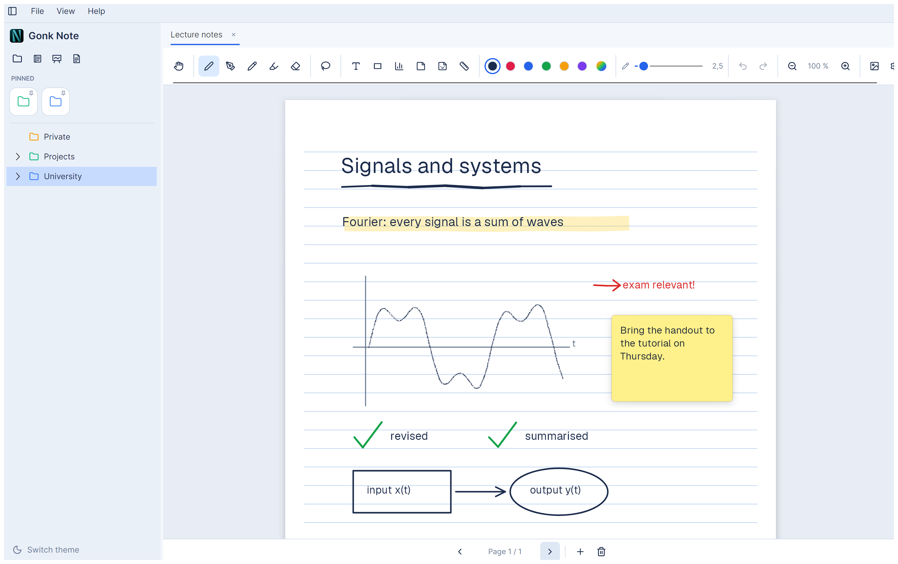
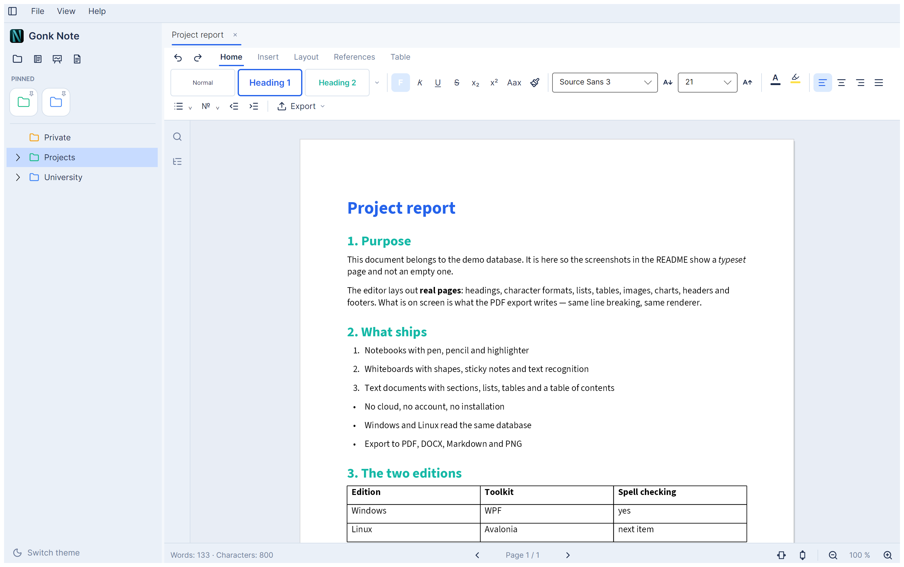
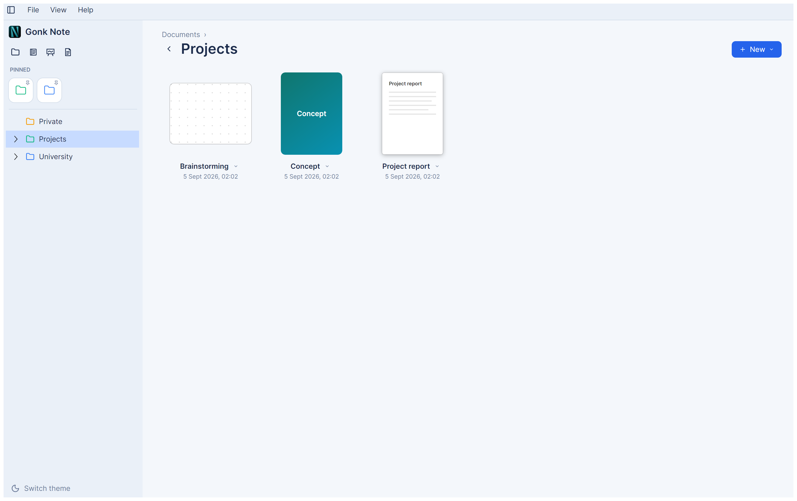

Notebooks, whiteboards and text documents — on Windows 11 and Linux. Stylus-friendly, no cloud, no account, no installer.
Version 1.0.0 · MIT licence · the Windows exe and the Linux AppImage run without an installed .NET

A4 and A3 pages with a customisable cover, pen, pencil and highlighter including pressure and tilt, precise erasing, lasso and a shape pen.
An endless canvas with a dot grid, sticky notes, stickers, ruler and set square — and text recognition for handwriting.
An editor that typesets real pages: headings, lists, tables, fields, charts, a table of contents, headers and footers.
Import from DOCX, Markdown and PDF; export to PDF, DOCX, Markdown and PNG. What is on screen is what the export writes.


| System | File | What to do |
|---|---|---|
| Windows 11 | GonkNote-1.0.0-windows-x64.zip |
Unpack, run GonkNote.exe. Keep the tessdata folder next to it. |
| Linux | GonkNote-1.0.0-x86_64.AppImage |
chmod +x, run it. Needs only fontconfig and one font. |
| Linux, Flatpak | — not on Flathub yet — | Until then, build it yourself: packaging/flatpak/bauen.sh |
Gonk Note comes in two editions — one for Windows (WPF) and one for Linux (Avalonia). Both do the same things, read the same database and draw with the same renderer. Four differences remain, and they are named:
´ + e →
é) do not arrive — a reported bug in the window layer, not in Gonk Note.
Plain letters and umlauts are unaffected.The complete list with reasons is in the README.
Everything stays on the machine. On first start Gonk Note creates one
folder — %APPDATA%\GonkNote on Windows, ~/.config/GonkNote on
Linux — and writes nowhere else: no cloud, no account, no registry, no telemetry. To
uninstall, delete the program and that folder. That folder is also your backup.